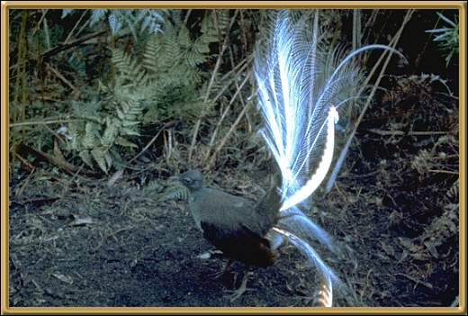

The lyrebird is renowned for its ability to imitate a vast range of natural and artificial noises! If you hear a saw, followed by a barking dog, followed by a whip crack and you are in the forests of Eastern Australia, you are probably listening to this performer! There are two varieties - this one, and Albert's lyrebird. This particular bird is found only on the eastern seaboard of NSW and Vic. The Albert lyrebird's habitat is much more restricted. It is about 80-100cm (32-40 inches).
Photographer: A Selby